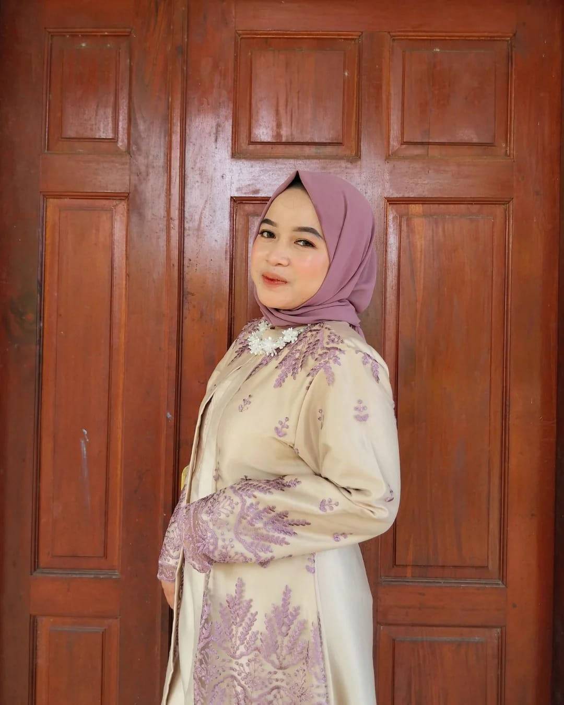

Hello, I'm
Aku mahasiswa semester 5 jurusan Informatika di Universitas Pamulang. Saat ini aku sedang mengeksplor dunia teknologi, khususnya Data Analytics, sekaligus mengembangkan kemampuan di bidang UI/UX Design dan Front-End Development. Aku menyukai proses menganalisis data untuk menemukan insight dan pola yang dapat membantu pengambilan keputusan yang lebih baik, sambil tetap memperhatikan pengalaman pengguna melalui desain yang clean dan estetis.
Projects Completed
Technical Skills
Semester Student
Passion & Dedication
Saya Raya, mahasiswa Informatika yang punya ketertarikan besar pada Data Analytics dan UI/UX Design. Saya ingin menjadi jembatan antara data dan manusia—mengubah data kompleks menjadi insight yang mudah dipahami melalui desain yang user-friendly. Semangat belajar dan eksplorasi teknologi adalah bahan bakar saya.
Menjadi Data Analyst profesional yang bisa mengubah data mentah jadi insight valuable. Juga pengen terus develop skill design buat create user experience yang memorable.
🎧 Music for inspiration
📊 Analyzing data patterns
🎨 Creating beautiful UI
💻 Coding solutions
☕ Coffee breaks
Awalnya aku bukan penggemar angka, tapi perjalanan kuliah mengubah itu. Aku menemukan bahwa data adalah bahasa bisnis modern, dan analisis data adalah seni memahami cerita di balik angka. Sekarang, aku bersemangat mengubah data mentah menjadi visualisasi yang 'berbicara'.
Intern - Bawaslu (1 Bulan)
Membantu administrasi dokumen dan input data.
Berkoordinasi dengan tim internal untuk kelancaran pelaporan administrasi bulanan.
Project Team - Website Pemesanan Service AC
Berperan sebagai UI designer dalam pembuatan sistem pemesanan servis AC berbasis web pada PT Biru Langit Gemilang. Merancang user interface yang intuitif dan user-friendly.
Project Team - Website Coffee Shop Kaca Saka
Berperan sebagai UI/UX designer dan developer dalam project tim, bekerja sama untuk merancang desain dan coding secara kolaboratif. Implementasi responsive design dan interactive elements.
Bendahara Kelas - Universitas Pamulang Semester 1-2 (2023-2024)
Mengelola dan mencatat arus kas kelas, termasuk pemasukan dari iuran dan pengeluaran untuk kegiatan kelas.
Menyusun dan mempertanggung jawabkan laporan keuangan bulanan kepada anggota kelas.
Pengurus Karang Taruna Desa Pabuaran (2023-Saat Ini)
Berpartisipsi aktif dalam perencanaan dan pelaksanaan berbagai kegiatan sosial, seperti lomba 17 agustus.
Mengembangkan keterampilan komunikasi dan kepemimpinan melalui interaksi dengan masyarakat dan anggota organisasi.
Digital booking service berbasis web untuk layanan AC dengan interface yang modern dan mudah digunakan.
UI DesignPlatform menu dan showcase pemesanan digital dengan desain yang aesthetic dan user-friendly.
UI/UX & DevBlog edukatif tentang pengolahan citra digital dengan implementasi filter spasial untuk perbaikan citra tercemar noise menggunakan Python.
Technical Writing Python Image ProcessingFeel free to reach out via any of these platforms: